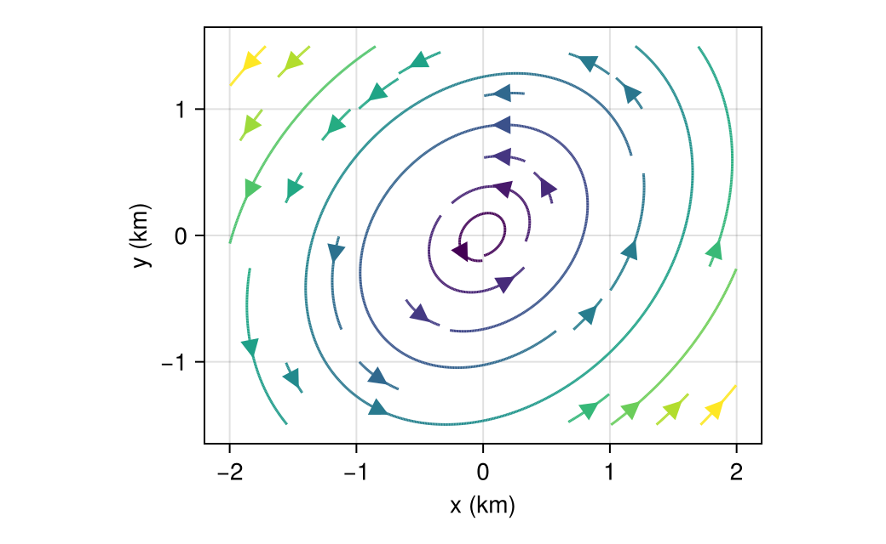

streamplot!
A streamplot! draws its flow as two parts, and masque(fig) makes each respond on its own: the arrowheads, under the name scatter, and the stream lines, all of them together, under lines. Hovering either shows the point under the pointer, and a click sends it to your notebook. Hover the arrowheads below, then click one:
Notebook as text
using Masque, CairoMakie, Randombegin
flow(x, y) = Point2f(-y + 0.3x, x - 0.2y)
fig = Figure(size = (520, 320))
ax = Axis(
fig[1, 1];
aspect = DataAspect(),
xlabel = "x (km)",
ylabel = "y (km)",
)
sp = streamplot!(
ax, flow, -2 .. 2, -1.5 .. 1.5;
colormap = :viridis,
gridsize = (12, 12),
)
nothing
end@bind pick masque(fig; bind = sp)
pickWhat a click returns
With the plot as bind, pick holds one field per part: pick.scatter for an arrowhead and pick.lines for a line, each nothing until you click there. Each is an ElementEvent:
| Part | Fields |
|---|---|
scatter | index, which arrowhead in Makie's order, and x, y, where it sits |
lines | index, the point's place along all the lines together; line, always 1; and x, y, the point on a line nearest the pointer |
The flow function itself isn't sent: to read the flow at a clicked point, call it with pick.scatter.x and pick.scatter.y.
Show your own data
Makie decides where the arrowheads and lines go, so give a tooltip template rather than payloads. A plain template applies to both parts and can use x and y; to give one part its own, key the templates by part name, as in tooltip = (scatter = masque"…",), and the other part keeps its default:
Plots with several parts says more about plots like this one.
Supported axes
streamplot! works on a 2D Axis.
Where to go next
For arrows you place yourself, see arrows3d! on an Axis3.